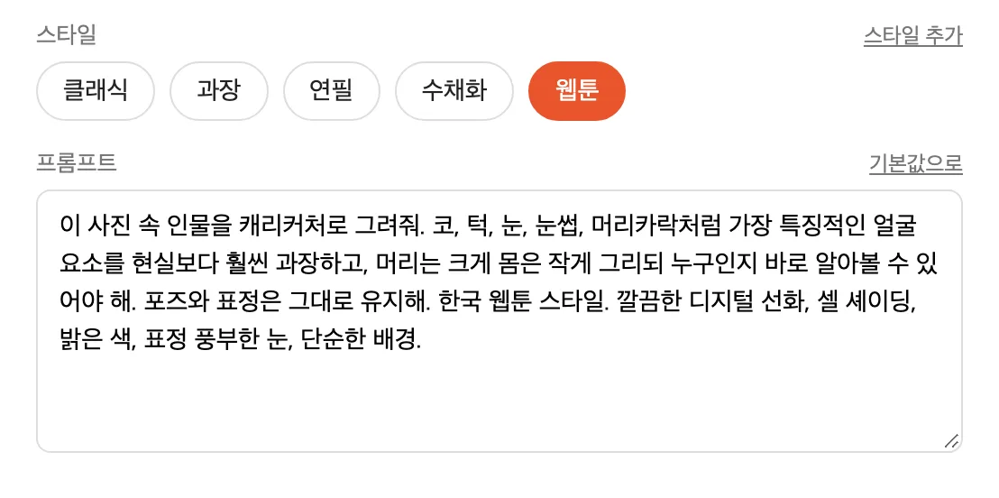
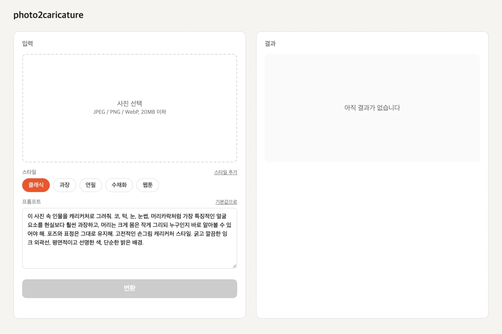
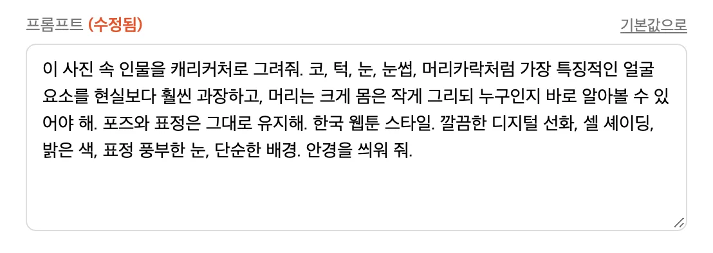
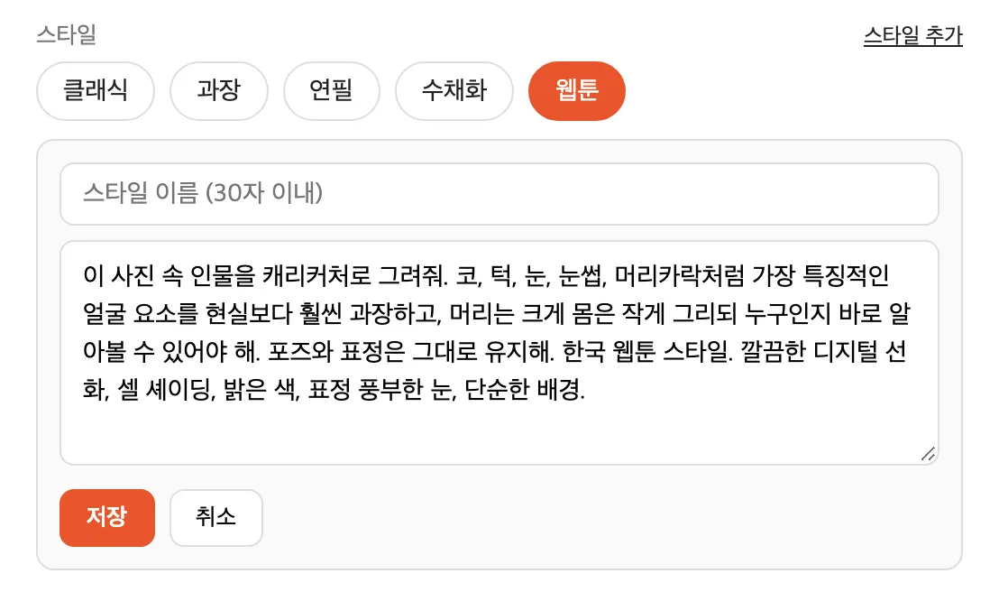

스타일 고르기
클래식·과장·연필·수채화·웹툰 다섯 가지가 들어 있습니다. 고르면 그 스타일의 기본 프롬프트가 아래 칸에 채워집니다.
인물 사진을 넣고 스타일을 고르면 캐리커처로 그려 주는 도구입니다. 다 그린 그림도 말로 더 고칠 수 있습니다.

처음엔 OpenAI 이미지 편집 API로 시작해 Gemini, 로컬 FLUX.2 Klein(mflux)을 거쳐, 지금은 로그인해 둔 ChatGPT 웹을 Playwright로 조작해서 그립니다. API 키 없이 쓰고, 자동화용 Chrome 창은 최소화된 채 돌아갑니다. 더블클릭 실행기로 서버가 켜지고, 열어 둔 탭을 다 닫으면 서버도 꺼집니다(macOS에서는 터미널 창까지).

클래식·과장·연필·수채화·웹툰 다섯 가지가 들어 있습니다. 고르면 그 스타일의 기본 프롬프트가 아래 칸에 채워집니다.

채워진 프롬프트에 지시를 덧붙이거나 고쳐서 보낼 수 있습니다. 고친 건 그 변환에만 쓰이고, '기본값으로'를 누르면 되돌아옵니다.

이름과 프롬프트를 적어 저장하면 스타일 단추로 추가됩니다. 저장한 스타일은 ×로 지울 수 있습니다.
같은 사진과 프롬프트로 다시 그립니다.
방금 그린 그림에서 고칠 점을 적으면 그 그림을 이어서 고칩니다. 결과는 PNG로 저장합니다.